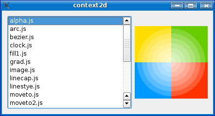
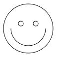

Context2D Example
This Qt Script example is an implementation of the Context2D API.

Context2D is part of the specification for the HTML <canvas> element. It can be used to draw graphics via scripting. A good resource for learning more about the HTML <canvas> element is the Mozilla Developer Center.
Using The HTML Canvas Element in a Web Browser
First, let's look at how the <canvas> element is typically used in a web browser. The following HTML snippet defines a canvas of size 400x400 pixels with id mycanvas:
<canvas width="400" height="400" id="mycanvas">Fallback content goes here.</canvas>
To draw on the canvas, we must first obtain a reference to the DOM element corresponding to the <canvas> tag and then call the element's getContext() function. The resulting object implements the Context2D API that we use to draw.
<script> var canvas = document.getElementById("mycanvas"); var ctx = canvas.getContext("2d"); // Draw a face ctx.beginPath(); ctx.arc(75,75,50,0,Math.PI*2,true); // Outer circle ctx.moveTo(110,75); ctx.arc(75,75,35,0,Math.PI,false); // Mouth ctx.moveTo(65,65); ctx.arc(60,65,5,0,Math.PI*2,true); // Left eye ctx.moveTo(95,65); ctx.arc(90,65,5,0,Math.PI*2,true); // Right eye ctx.stroke(); </script>
When the page is rendered by a browser that supports the <canvas> tag, this would be the result:

Using Qt Script to script a Canvas
The goal of this example is to be able to evaluate scripts that use the Context2D API, and render the results. Basic interaction (mouse, keyboard) should also be supported. In other words, we want to present scripts with an execution environment that very much resembles that of a web browser. Of course, our environment is only a small subset of what a browser provides; i.e. we don't provide a full DOM API, only what is needed to run "self-contained" Context2D scripts (i.e. scripts that don't depend on other parts of the DOM document).
Our "Context2D-browser" is set up through the following steps:
- Create an Environment.
- Create a Context2D, and a QContext2DCanvas widget to render it.
- Add the canvas object to the environment; this will enable scripts to obtain a reference to it.
- Evaluate scripts in the environment.
Once a script has been evaluated, the application handles any timer events and input events that occur subsequently (i.e. forwards events to their associated script targets).
The Context2D Class
The "heart" of this example is the Context2D C++ class that implements the drawing API. Its interface is defined in terms of properties and slots. Note that this class isn't tied to Qt Script in any way.
class Context2D : public QObject { Q_OBJECT // compositing Q_PROPERTY(qreal globalAlpha READ globalAlpha WRITE setGlobalAlpha) Q_PROPERTY(QString globalCompositeOperation READ globalCompositeOperation WRITE setGlobalCompositeOperation) Q_PROPERTY(QVariant strokeStyle READ strokeStyle WRITE setStrokeStyle) Q_PROPERTY(QVariant fillStyle READ fillStyle WRITE setFillStyle) // line caps/joins Q_PROPERTY(qreal lineWidth READ lineWidth WRITE setLineWidth) Q_PROPERTY(QString lineCap READ lineCap WRITE setLineCap) Q_PROPERTY(QString lineJoin READ lineJoin WRITE setLineJoin) Q_PROPERTY(qreal miterLimit READ miterLimit WRITE setMiterLimit) // shadows Q_PROPERTY(qreal shadowOffsetX READ shadowOffsetX WRITE setShadowOffsetX) Q_PROPERTY(qreal shadowOffsetY READ shadowOffsetY WRITE setShadowOffsetY) Q_PROPERTY(qreal shadowBlur READ shadowBlur WRITE setShadowBlur) Q_PROPERTY(QString shadowColor READ shadowColor WRITE setShadowColor)
The properties define various aspects of the Context2D configuration.
public slots: void save(); // push state on state stack void restore(); // pop state stack and restore state void scale(qreal x, qreal y); void rotate(qreal angle); void translate(qreal x, qreal y); void transform(qreal m11, qreal m12, qreal m21, qreal m22, qreal dx, qreal dy); void setTransform(qreal m11, qreal m12, qreal m21, qreal m22, qreal dx, qreal dy); CanvasGradient createLinearGradient(qreal x0, qreal y0, qreal x1, qreal y1); CanvasGradient createRadialGradient(qreal x0, qreal y0, qreal r0, qreal x1, qreal y1, qreal r1); // rects void clearRect(qreal x, qreal y, qreal w, qreal h); void fillRect(qreal x, qreal y, qreal w, qreal h); void strokeRect(qreal x, qreal y, qreal w, qreal h); // path API void beginPath(); void closePath(); void moveTo(qreal x, qreal y); void lineTo(qreal x, qreal y); void quadraticCurveTo(qreal cpx, qreal cpy, qreal x, qreal y); void bezierCurveTo(qreal cp1x, qreal cp1y, qreal cp2x, qreal cp2y, qreal x, qreal y); void arcTo(qreal x1, qreal y1, qreal x2, qreal y2, qreal radius); void rect(qreal x, qreal y, qreal w, qreal h); void arc(qreal x, qreal y, qreal radius, qreal startAngle, qreal endAngle, bool anticlockwise); void fill(); void stroke(); void clip(); bool isPointInPath(qreal x, qreal y) const;
The slots define the operations that can be performed.
signals: void changed(const QImage &image);
The changed() signal is emitted when the contents of the drawing area has changed, so that clients associated with the Context2D object (i.e. the canvas widget that renders it) are notified.
Implementation
Conveniently enough, the concepts, data structures and operations of the Context2D API map more or less directly to Qt's painting API. Conceptually, all we have to do is initialize a QPainter according to the Context2D properties, and use functions like QPainter::strokePath() to do the painting. Painting is done on a QImage.
QString Context2D::lineCap() const { switch (m_state.lineCap) { case Qt::FlatCap: return "butt"; case Qt::SquareCap: return "square"; case Qt::RoundCap: return "round"; default: ; } return QString(); } void Context2D::setLineCap(const QString &capString) { Qt::PenCapStyle style; if (capString == "round") style = Qt::RoundCap; else if (capString == "square") style = Qt::SquareCap; else //if (capString == "butt") style = Qt::FlatCap; m_state.lineCap = style; m_state.flags |= DirtyLineCap; }
The property accessors and most of the slots manipulate the internal Context2D state in some way. For the lineCap property, Context2D uses a string representation; we therefore have to map it from/to a Qt::PenCapStyle. The lineJoin property is handled in the same fashion. All the property setters also set a dirty flag for the property; this is used to decide which aspects of the QPainter that need to be updated before doing the next painting operation.
void Context2D::setFillStyle(const QVariant &style) { if (style.canConvert<CanvasGradient>()) { CanvasGradient cg = qvariant_cast<CanvasGradient>(style); m_state.fillStyle = cg.value; } else { QColor color = colorFromString(style.toString()); m_state.fillStyle = color; } m_state.flags |= DirtyFillStyle; }
The implementation of the fillStyle property is interesting, since the value can be either a string or a CanvasGradient. We handle this by having the property be of type QVariant, and check the actual type of the value to see how to handle the write.
void Context2D::fillRect(qreal x, qreal y, qreal w, qreal h) { beginPainting(); m_painter.save(); m_painter.setMatrix(m_state.matrix, false); m_painter.fillRect(QRectF(x, y, w, h), m_painter.brush()); m_painter.restore(); scheduleChange(); }
Context2D does not have a concept of a paint event; painting operations can happen at any time. We would like to be efficient, and not have to call QPainter::begin() and QPainter::end() for every painting operation, since typically many painting operations will follow in quick succession. The implementations of the painting operations use a helper function, beginPainting(), that activates the QPainter if it isn't active already, and updates the state of the QPainter (brush, pen, etc.) so that it reflects the current Context2D state.
void Context2D::scheduleChange() { if (m_changeTimerId == -1) m_changeTimerId = startTimer(0); } void Context2D::timerEvent(QTimerEvent *e) { if (e->timerId() == m_changeTimerId) { killTimer(m_changeTimerId); m_changeTimerId = -1; emit changed(endPainting()); } else { QObject::timerEvent(e); } }
The implementation of each painting operation ends by calling scheduleChange(), which will post a zero-timer event if one is not already pending. When the application returns to the event loop later (presumably after all the drawing operations have finished), the timer will trigger, QPainter::end() will be called, and the changed() signal is emitted with the new image as argument. The net effect is that there will typically be only a single (QPainter::begin(), QPainter::end()) pair executed for the full sequence of painting operations.
The Canvas Widget
class QContext2DCanvas : public QWidget { Q_OBJECT public: QContext2DCanvas(Context2D *context, Environment *env, QWidget *parent = 0); ~QContext2DCanvas(); Context2D *context() const; void reset(); public slots: QScriptValue getContext(const QString &str); void resize(int width, int height); // EventTarget void addEventListener(const QString &type, const QScriptValue &listener, bool useCapture); protected: virtual void paintEvent(QPaintEvent *e); virtual void mouseMoveEvent(QMouseEvent *e); virtual void mousePressEvent(QMouseEvent *e); virtual void mouseReleaseEvent(QMouseEvent *e); virtual void keyPressEvent(QKeyEvent *e); virtual void keyReleaseEvent(QKeyEvent *e); virtual void resizeEvent(QResizeEvent *e); private slots: void contentsChanged(const QImage &image);
The QContext2DCanvas class provides a widget that renders the contents of a Context2D object. It also provides a minimal scripting API, most notably the getContext() function.
QContext2DCanvas::QContext2DCanvas(Context2D *context, Environment *env, QWidget *parent) : QWidget(parent), m_context(context), m_env(env) { QObject::connect(context, SIGNAL(changed(QImage)), this, SLOT(contentsChanged(QImage))); setMouseTracking(true); }
The constructor connects to the changed() signal of the Context2D object, so that the widget can update itself when it needs to do so. Mouse tracking is enabled so that mouse move events will be received even when no mouse buttons are depressed.
QScriptValue QContext2DCanvas::getContext(const QString &str) { if (str != "2d") return QScriptValue(); return m_env->toWrapper(m_context); }
The getContext() function asks the environment to wrap the Context2D object; the resulting proxy object makes the Context2D API available to scripts.
void QContext2DCanvas::contentsChanged(const QImage &image) { m_image = image; update(); } void QContext2DCanvas::paintEvent(QPaintEvent *e) { QPainter p(this); #ifdef Q_OS_SYMBIAN // Draw white rect first since in with some themes the js-file content will produce black-on-black. QBrush whiteBgBrush(Qt::white); p.fillRect(e->rect(), whiteBgBrush); #endif p.setClipRect(e->rect()); p.drawImage(0, 0, m_image); }
The paintEvent() function simply paints the contents that was last received from the Context2D object.
void QContext2DCanvas::mouseMoveEvent(QMouseEvent *e) { m_env->handleEvent(this, e); } void QContext2DCanvas::mousePressEvent(QMouseEvent *e) { m_env->handleEvent(this, e); } void QContext2DCanvas::mouseReleaseEvent(QMouseEvent *e) { m_env->handleEvent(this, e); } void QContext2DCanvas::keyPressEvent(QKeyEvent *e) { m_env->handleEvent(this, e); } void QContext2DCanvas::keyReleaseEvent(QKeyEvent *e) { m_env->handleEvent(this, e); }
The canvas widget reimplements mouse and key event handlers, and forwards these events to the scripting environment. The environment will take care of delivering the event to the proper script target, if any.
The Environment
class Environment : public QObject { Q_OBJECT Q_PROPERTY(QScriptValue document READ document) public: Environment(QObject *parent = 0); ~Environment(); QScriptValue document() const; void addCanvas(QContext2DCanvas *canvas); QContext2DCanvas *canvasByName(const QString &name) const; QList<QContext2DCanvas*> canvases() const; QScriptValue evaluate(const QString &code, const QString &fileName = QString()); QScriptValue toWrapper(QObject *object); void handleEvent(QContext2DCanvas *canvas, QMouseEvent *e); void handleEvent(QContext2DCanvas *canvas, QKeyEvent *e); void reset();
The Environment class provides a scripting environment where a Canvas C++ object can be registered, looked up by ID (name), and where scripts can be evaluated. The environment has a document property, just like the scripting environment of a web browser, so that scripts can call document.getElementById() to obtain a reference to a canvas.
public slots: int setInterval(const QScriptValue &expression, int delay); void clearInterval(int timerId); int setTimeout(const QScriptValue &expression, int delay); void clearTimeout(int timerId);
The Environment class provides the timer attributes of the DOM Window Object interface. This enables us to support scripts that do animation, for example.
signals: void scriptError(const QScriptValue &error);
The scriptError() signal is emitted when evaluation of a script causes a script exception. For example, if a mouse press handler or timeout handler causes an exception, the environment's client(s) will be notified of this and can report the error.
Environment::Environment(QObject *parent) : QObject(parent) { m_engine = new QScriptEngine(this); m_document = m_engine->newQObject( new Document(this), QScriptEngine::QtOwnership, QScriptEngine::ExcludeSuperClassContents); CanvasGradientPrototype::setup(m_engine); m_originalGlobalObject = m_engine->globalObject(); reset(); }
The constructor initializes the environment. First it creates the QScriptEngine that will be used to evaluate scripts. It creates the Document object that provides the getElementById() function. Note that the QScriptEngine::ExcludeSuperClassContents flag is specified to avoid the wrapper objects from exposing properties and methods inherited from QObject. Next, the environment wraps a pointer to itself; this is to prepare for setting this object as the script engine's Global Object. The properties of the standard Global Object are copied, so that these will also be available in our custom Global Object. We also create two self-references to the object; again, this is to provide a minimal level of compabilitity with the scripting environment that web browsers provide.
void Environment::addCanvas(QContext2DCanvas *canvas) { m_canvases.append(canvas); } QContext2DCanvas *Environment::canvasByName(const QString &name) const { for (int i = 0; i < m_canvases.size(); ++i) { QContext2DCanvas *canvas = m_canvases.at(i); if (canvas->objectName() == name) return canvas; } return 0; }
The addCanvas() function adds the given canvas to the list of registered canvas objects. The canvasByName() function looks up a canvas by QObject::objectName(). This function is used to implement the document.getElementById() script function.
int Environment::setInterval(const QScriptValue &expression, int delay) { if (expression.isString() || expression.isFunction()) { int timerId = startTimer(delay); m_intervalHash.insert(timerId, expression); return timerId; } return -1; } void Environment::clearInterval(int timerId) { killTimer(timerId); m_intervalHash.remove(timerId); } void Environment::timerEvent(QTimerEvent *event) { int id = event->timerId(); QScriptValue expression = m_intervalHash.value(id); if (!expression.isValid()) { expression = m_timeoutHash.value(id); if (expression.isValid()) killTimer(id); } if (expression.isString()) { evaluate(expression.toString()); } else if (expression.isFunction()) { expression.call(); } maybeEmitScriptError(); }
The setInterval() and clearInterval() implementations use a QHash to map from timer ID to the QScriptValue that holds the expression to evaluate when the timer is triggered. A helper function, maybeEmitScriptError(), is called after invoking the script handler; it will emit the scriptError() signal if the script engine has an uncaught exception.
QScriptValue Environment::toWrapper(QObject *object) { return m_engine->newQObject(object, QScriptEngine::QtOwnership, QScriptEngine::PreferExistingWrapperObject | QScriptEngine::ExcludeSuperClassContents); }
The toWrapper() functions creates a QScriptValue that wraps the given QObject. Note that the QScriptEngine::PreferExistingWrapperObject flag is specified; this guarantees that a single, unique wrapper object will be returned, even if toWrapper() is called several times with the same argument. This is important, since it is possible that a script can set new properties on the resulting wrapper object (e.g. event handlers like onmousedown), and we want these to persist.
void Environment::handleEvent(QContext2DCanvas *canvas, QMouseEvent *e) { QString type; switch (e->type()) { case QEvent::MouseButtonPress: type = "mousedown"; break; case QEvent::MouseButtonRelease: type = "mouseup"; break; case QEvent::MouseMove: type = "mousemove"; break; default: break; } if (type.isEmpty()) return; QScriptValue handlerObject; QScriptValue handler = eventHandler(canvas, type, &handlerObject); if (!handler.isFunction()) return; QScriptValue scriptEvent = newFakeDomEvent(type, toWrapper(canvas)); // MouseEvent scriptEvent.setProperty("screenX", e->globalX(), QScriptValue::ReadOnly); scriptEvent.setProperty("screenY", e->globalY(), QScriptValue::ReadOnly); scriptEvent.setProperty("clientX", e->x(), QScriptValue::ReadOnly); scriptEvent.setProperty("clientY", e->y(), QScriptValue::ReadOnly); scriptEvent.setProperty("layerX", e->x(), QScriptValue::ReadOnly); scriptEvent.setProperty("layerY", e->y(), QScriptValue::ReadOnly); scriptEvent.setProperty("pageX", e->x(), QScriptValue::ReadOnly); scriptEvent.setProperty("pageY", e->y(), QScriptValue::ReadOnly); scriptEvent.setProperty("altKey", (e->modifiers() & Qt::AltModifier) != 0, QScriptValue::ReadOnly); scriptEvent.setProperty("ctrlKey", (e->modifiers() & Qt::ControlModifier) != 0, QScriptValue::ReadOnly); scriptEvent.setProperty("metaKey", (e->modifiers() & Qt::MetaModifier) != 0, QScriptValue::ReadOnly); scriptEvent.setProperty("shiftKey", (e->modifiers() & Qt::ShiftModifier) != 0, QScriptValue::ReadOnly); int button = 0; if (e->button() == Qt::RightButton) button = 2; else if (e->button() == Qt::MidButton) button = 1; scriptEvent.setProperty("button", button); scriptEvent.setProperty("relatedTarget", m_engine->nullValue(), QScriptValue::ReadOnly); handler.call(handlerObject, QScriptValueList() << scriptEvent); maybeEmitScriptError(); }
The handleEvent() function determines if there exists a handler for the given event in the environment, and if so, invokes that handler. Since the script expects a DOM event, the Qt C++ event must be converted to a DOM event before it is passed to the script. This mapping is relatively straightforward, but again, we only implement a subset of the full DOM API; just enough to get most scripts to work.
QScriptValue Environment::newFakeDomEvent(const QString &type, const QScriptValue &target) { QScriptValue e = m_engine->newObject(); // Event e.setProperty("type", type, QScriptValue::ReadOnly); e.setProperty("bubbles", true, QScriptValue::ReadOnly); e.setProperty("cancelable", false, QScriptValue::ReadOnly); e.setProperty("target", target, QScriptValue::ReadOnly); e.setProperty("currentTarget", target, QScriptValue::ReadOnly); e.setProperty("eventPhase", 3); // bubbling e.setProperty("timeStamp", QDateTime::currentDateTime().toTime_t()); // UIEvent e.setProperty("detail", 0, QScriptValue::ReadOnly); e.setProperty("view", m_engine->globalObject(), QScriptValue::ReadOnly); return e; }
The newFakeDomEvent() function is a helper function that creates a new script object and initializes it with default values for the attributes defined in the DOM Event and DOM UIEvent interfaces.
class Document : public QObject { Q_OBJECT public: Document(Environment *env); ~Document(); public slots: QScriptValue getElementById(const QString &id) const; QScriptValue getElementsByTagName(const QString &name) const; // EventTarget void addEventListener(const QString &type, const QScriptValue &listener, bool useCapture); };
The Document class defines two slots that become available to scripts: getElementById() and getElementsByTagName(). When the tag name is "canvas", getElementsByTagName() will return a list of all canvas objects that are registered in the environment.
The Application Window
Window::Window(QWidget *parent) : QWidget(parent) #ifndef QT_NO_SCRIPTTOOLS , m_debugger(0), m_debugWindow(0) #endif { m_env = new Environment(this); QObject::connect(m_env, SIGNAL(scriptError(QScriptValue)), this, SLOT(reportScriptError(QScriptValue))); Context2D *context = new Context2D(this); context->setSize(150, 150); m_canvas = new QContext2DCanvas(context, m_env, this); m_canvas->setFixedSize(context->size()); m_canvas->setObjectName("tutorial"); m_env->addCanvas(m_canvas);
The Window constructor creates an Environment object and connects to its scriptError() signal. It then creates a Context2D object, and a QContext2DCanvas widget to hold it. The canvas widget is given the name tutorial, and added to the environment; scripts can access the canvas by e.g. document.getElementById('tutorial').
QDir dir(scriptsDir());
QFileInfoList entries = dir.entryInfoList(QStringList() << "*.js");
for (int i = 0; i < entries.size(); ++i)
m_view->addItem(entries.at(i).fileName());
connect(m_view, SIGNAL(currentItemChanged(QListWidgetItem*,QListWidgetItem*)),
this, SLOT(selectScript(QListWidgetItem*)));
The window contains a list widget that is populated with available scripts (read from a scripts/ folder).
void Window::selectScript(QListWidgetItem *item) { QString fileName = item->text(); runScript(fileName, /*debug=*/false); }
When an item is selected, the corresponding script is evaluated in the environment.
void Window::runInDebugger() { QListWidgetItem *item = m_view->currentItem(); if (item) { QString fileName = item->text(); runScript(fileName, /*debug=*/true); } }
When the "Run in Debugger" button is clicked, the Qt Script debugger will automatically be invoked when the first statement of the script is reached. This enables the user to inspect the scripting environment and control further execution of the script; e.g. he can single-step through the script and/or set breakpoints. It is also possible to enter script statements in the debugger's console widget, e.g. to perform custom Context2D drawing operations, interactively.
void Window::runScript(const QString &fileName, bool debug) { QFile file(scriptsDir() + "/" + fileName); file.open(QIODevice::ReadOnly); QString contents = file.readAll(); file.close(); m_env->reset(); #ifndef QT_NO_SCRIPTTOOLS if (debug) { if (!m_debugger) { m_debugger = new QScriptEngineDebugger(this); m_debugWindow = m_debugger->standardWindow(); m_debugWindow->setWindowModality(Qt::ApplicationModal); m_debugWindow->resize(1280, 704); } m_debugger->attachTo(m_env->engine()); m_debugger->action(QScriptEngineDebugger::InterruptAction)->trigger(); } else { if (m_debugger) m_debugger->detach(); } #else Q_UNUSED(debug); #endif QScriptValue ret = m_env->evaluate(contents, fileName); #ifndef QT_NO_SCRIPTTOOLS if (m_debugWindow) m_debugWindow->hide(); #endif if (ret.isError()) reportScriptError(ret); }
If the evaluation of a script causes an uncaught exception, the Qt Script debugger will automatically be invoked; this enables the user to get an idea of what went wrong.
Files:
- script/context2d/context2d.cpp
- script/context2d/context2d.h
- script/context2d/domimage.cpp
- script/context2d/domimage.h
- script/context2d/environment.cpp
- script/context2d/environment.h
- script/context2d/qcontext2dcanvas.cpp
- script/context2d/qcontext2dcanvas.h
- script/context2d/window.cpp
- script/context2d/window.h
- script/context2d/scripts/alpha.js
- script/context2d/scripts/arc.js
- script/context2d/scripts/bezier.js
- script/context2d/scripts/clock.js
- script/context2d/scripts/fill1.js
- script/context2d/scripts/grad.js
- script/context2d/scripts/linecap.js
- script/context2d/scripts/linestye.js
- script/context2d/scripts/moveto.js
- script/context2d/scripts/moveto2.js
- script/context2d/scripts/pacman.js
- script/context2d/scripts/plasma.js
- script/context2d/scripts/pong.js
- script/context2d/scripts/quad.js
- script/context2d/scripts/rgba.js
- script/context2d/scripts/rotate.js
- script/context2d/scripts/scale.js
- script/context2d/scripts/stroke1.js
- script/context2d/scripts/translate.js
- script/context2d/main.cpp
- script/context2d/context2d.pro
- script/context2d/context2d.qrc